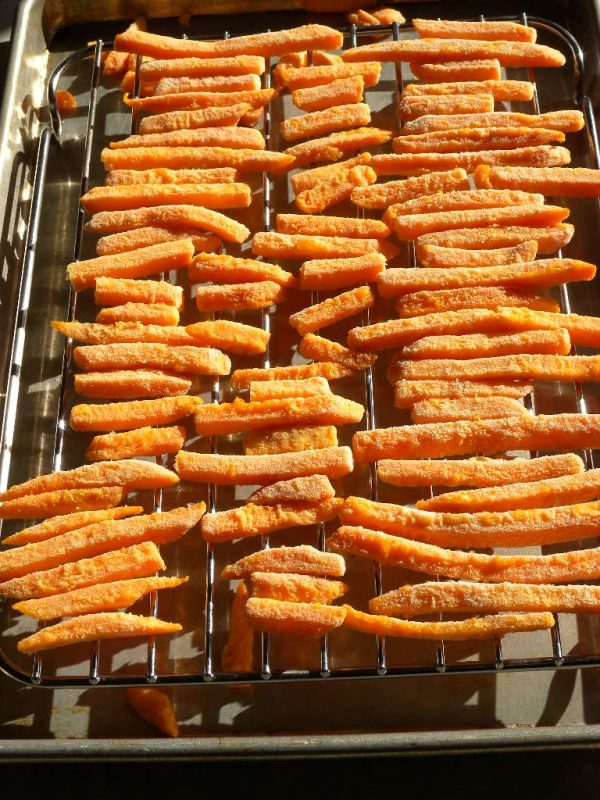

Oven French Fries

Photo: waynewalterberry (CC BY-SA 2.0)
Oven-baked French fries made from skin-on baking potatoes coated in beaten egg white and a parmesan-oregano crust.
Directions
- Mix cheese and oregano. Slice potato for French fries. Coat with egg white, dredge in cheese. Spray cookie sheet and bake 25 minutes at 450 degrees.
- Mix the 1/2 cup parmesan cheese with the 2 teaspoons oregano.
- Slice the 2 baking potatoes (with skins) into French fries.
- Coat the potato slices with the beaten egg white, then dredge them in the cheese mixture.
- Spray a cookie sheet with vegetable spray and arrange the potatoes on it.
- Bake at 450 degrees for 25 minutes.
Goes well with
https://baron-3dl.github.io/normans-kitchen/recipe/oven-french-fries.html